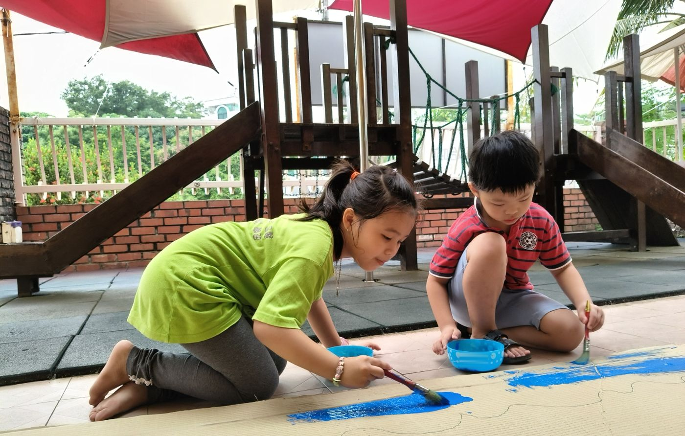

A Mandarin-medium kindergarten in Klang since 1999, where children aged 3 to 6 learn through hands-on projects, play and nature, in a spacious house with a garden.

Children from Indian and Malay families are part of our school community and settle in well. Many of them are preparing to enter a Chinese primary school (SJK(C)). After six months to a year with us, some children can already hold simple conversations in Mandarin.
Our in-house cook, Nichole Choong, prepares a morning snack, lunch and an afternoon snack every school day.
Please tell us about any food allergies when you enrol. The full weekly menu is on our Chinese admission page.
Each class discusses and votes on a theme they want to explore, then investigates it through experiments, crafts, games and field trips.
A two-storey detached house of 6,232 sq ft with a garden, wooden playground, sand pit, planting corner and fish pond, opposite Hin Hua High School.
Alongside Chinese festivals, we also celebrate Hari Raya Aidilfitri and Deepavali with the children.
Please WhatsApp us for the latest 2027 fee schedule. We can arrange a school visit at the same time.
Request fee scheduleMessage or call us to book a visit and ask for the fee schedule.
See the school, meet the teachers, and let your child get a feel for the place.
Fill in the online form and complete registration and payment as guided.
The online registration form is in both Chinese and English.